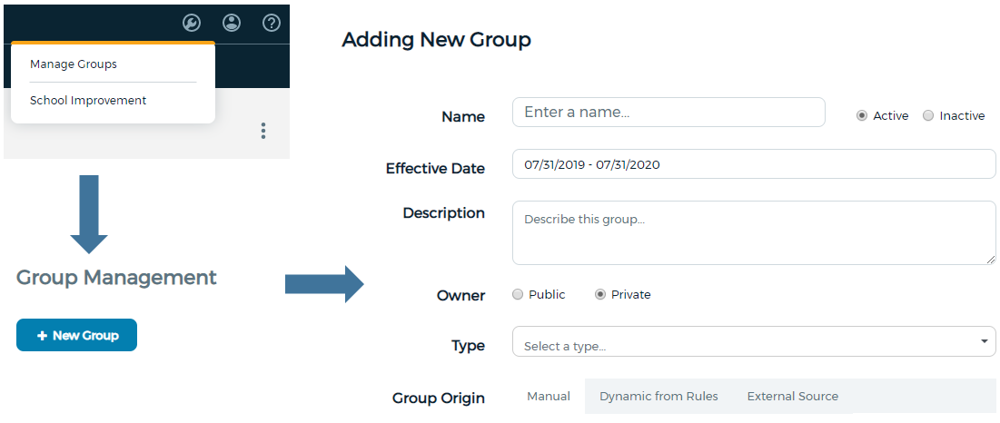

How can teachers use data to inform classroom instruction
Office of Grants, Research, Accountability, & Data
Learning Objectives
- Define what the dashboard is and can do
- Locate help within the dashboard and from our office
- Identify available data and tools in the dashboard
- Compare how filters affect dashboard content
- Create and share student groups
- What do you imagine when you think of a dashboard?
- What type of information can you get from your dashboard?
- How often is the information in your dashboard updated?
What is the data dashboard?
- Integrates data from Infinite Campus, MUNIS, and more...
- The data are all updated nightly
- In addition to current data, historical data is also available
- Gives you the tools you need to analyze student data
Our Support Portal
- In a new browser window - or tab - go to:
- https://bit.ly/2NTj04d
- Login using Google
- Click on the box titled "Data Central"
- Click on any of the four request type options.
- Fill out and complete a request.
In Dashboard Content


Assessment Inventory
- State Assessments
- ACCESS
- MAP
- Student Score Search
View NWEA Report in data dashboard
Student Groups
Creating a Student Group - Method One

Creating a Student Group - Method Two

Managing a Student Group
Student Groups Activity
- In a group of two to three people, each member create their own student group and share it with the other members of their small group.
- Drill down to view student level data.
- What happens? Do all group members see the same data? Hint: permision.